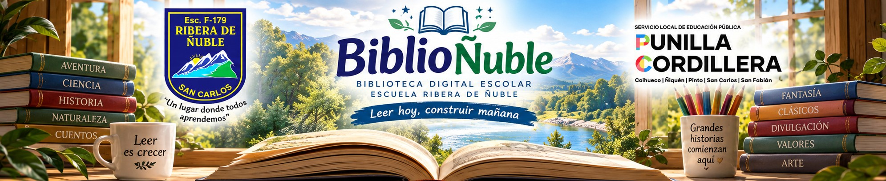

📖
Relatos y comprensión · HTML
El secreto del río
Lectura original gratuita con preguntas de comprensión.
📖 Leer ahora
Selecciona un libro y comienza a leer inmediatamente.
Lectura original gratuita con preguntas de comprensión.
📖 Leer ahoraSelecciona «Leer ahora» para abrir el libro en el lector de BiblioÑuble. También puedes abrirlo en otra pestaña o descargarlo cuando esté permitido.
Los favoritos se guardan únicamente en este dispositivo. Para leer sin conexión, descarga previamente el PDF.
Estos libros están en revisión. Todavía no están disponibles para leer. Cuando se confirme una edición autorizada pasarán automáticamente a la sección de lecturas disponibles.
Si tu dispositivo no muestra la lectura, usa «Abrir lectura» para verlo en el navegador.
Abre el menú de tu navegador y elige «Añadir a pantalla de inicio».